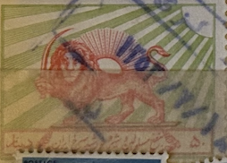
| SOURCE | TITLE| IMAGE MATCH | click to source page |
| eBay | Middle East 1963 Used Red Lion Tuberculosis Aid Yvert et Tellier B19 VF/XF 4425 | eBay |  |
| Colnect | Iran : Stamps [Emission: Postal Tax] [3/4] : Colnect 📮 | 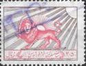 |
| telstamps.org.uk | Iranian Telegraph Stamps. | 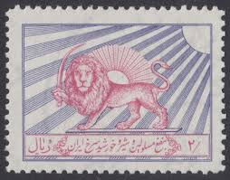 |
| Ars Technica | How the Comodo certificate fraud calls CA trust into question - Ars Technica |  |
| Flickr | Richard Wanderman | Flickr |  |
| HipStamp | Iran #RA6 Used VLH ; 50d Iranian Red Cross Lion & Sun Emblem - Perf 10.5 (1965) | Middle East - Iran, Revenues - Postal Tax Stamp / HipStamp |  |
| Dreamstime.com | Emblem of the Red Lion and Sun Society Editorial Photography - Image of lion, drawing: 293982492 | 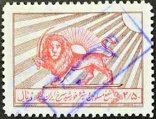 |
| Private - Post # 223 The Red Lion and Sun became a popular symbol in Persia (Iran) since the 12th century and was based mainly on astronomical and astrological configurations as also | 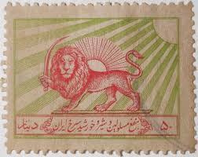 | |
| philatelyclub.com | Iran Scott Ra1 Postal Tax Stamp, Iranian Red Cross Lion And Sun Emblem, 1950 | 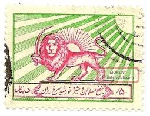 |
| HipStamp | Iran (Persia): 1965; Sc. # RA6, O/Used, Single Stamp | Middle East - Iran, Revenues - Postal Tax Stamp / HipStamp | 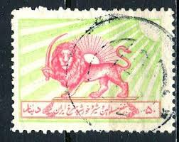 |
| Alamy | Lion and the sun stamp hi-res stock photography and images - Alamy | 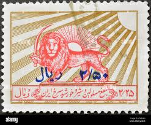 |
| Very rare 1955 50 dinar Charity stamp (Shir v Khorshid) with Watermark 2 Farahbakhsh: C15 Wmk 2 , Scott RA3 Wmk 316 | 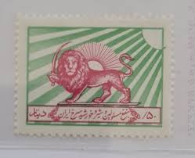 | |
| Alamy | Stamp iran hi-res stock photography and images - Alamy | 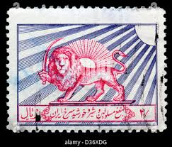 |
| دينل /۵۵ SNSINEES | 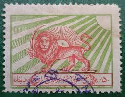 | |
| eBay UK | MIDDLE EAST STAMP | eBay UK | 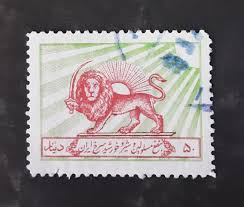 |
| X | انقلاب_شیروخورشید |  |
| Dreamstime.com | 548 Iranian Lion Stock Photos - Free & Royalty-Free Stock Photos from Dreamstime |  |
| Free for All Friday, 21 January 2022 : r/badhistory | 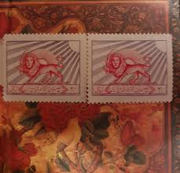 | |
| 123RF | Iranian Stamp Stock Photos and Images - 123RF |  |
| Colnect | Stamp: Emblem of the Red Lion and Sun Society (Iran(Red Lion and Sun Society and Tuberculosis Aid) Yt:IR B14A,Bar:IR T7,Far:IR C31 📮 |  |
| Redbubble | Sun King Art Prints for Sale | Redbubble | 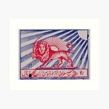 |
| Colnect | Stamp: Emblem of the Red Lion and Sun Society (Iran(Red Lion and Sun Society and Tuberculosis Aid) Mi:IR Z21,Sn:IR RA10,Yt:IR B20,Sg:IR T2007,Far:IR C20 📮 |  |
| HipStamp | Iran 1950 Scott RA1 used - 50d, Emblem of the Red Lion and Sun Society | Middle East - Iran, Revenues - Postal Tax Stamp / HipStamp |  |
| iStock | Persian Stamp Stock Photo - Download Image Now - Postage Stamp, Iran, Lion - Feline - iStock | 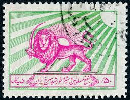 |
| iStock | Iraq Postage Stamps Stock Photo - Download Image Now - Iraq, Single Object, Above - iStock | 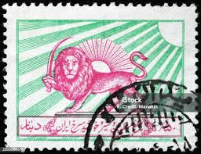 |
| Dreamstime.com | Postage Stamps of the Iranian. Editorial Image - Image of aged, post: 236555045 | 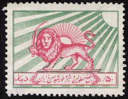 |
| Germany stamp 1949.For sale. BERLIN-TEMPELHOF FLUGHAFEN ยง DEVISCHEDOST АЫЛНЗИ DEGISCHE SOST 1M DM อาบบต | 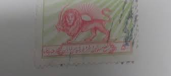 | |
| CollectorBazar | IRAN 1955 POSTAL TAX HOSPITALS FUND (RED CROSS LION AND SUN EMBLEM) USED STAMP |  |
| WordPress.com | Illustrated Identifier |  |
| CollectorBazar | Iran Used State Emblem - P13562 | 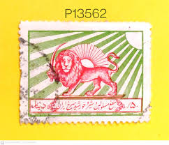 |
| YouTube | ٨ فبراير، ٢٠٢٦ - YouTube | 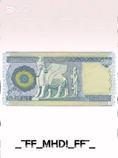 |
| Vintage Guyana -... - Vintage Guyana - History Preservation | 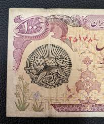 | |
| HipStamp | Iran #RA1 Used; 50d Iranian Red Cross Lion & Sun Emblem - Perf 11 (1950) | Middle East - Iran, Revenues - Postal Tax Stamp / HipStamp | 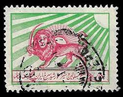 |
| Wikimedia.org | File:Iranian Shenasname Pahlavi.JPG - Wikimedia Commons | 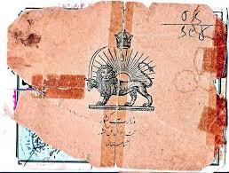 |
| Numista | 500 Rials - Mohammad Rezā Pahlavī (Winged Lion) - Iran – Numista | 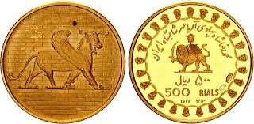 |
| eBay | Jewish Family Documents Iranian Early Pahlavi dynasty Certificates Iran Jews | eBay | 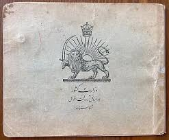 |
| Makan E-Rahmati (makanerahmati) - Profile | Pinterest | 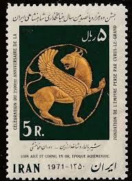 | |
| Redbubble | Persian stamp - Persian (iran) art" Poster by Elbenj | Redbubble | 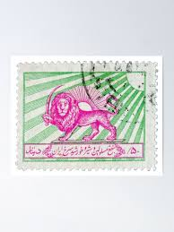 |
| | Katz Auction | Iran 500 Rials 1979 | Katz Auction | 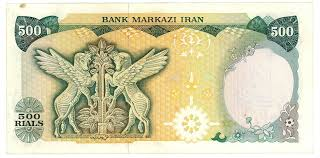 |
| Numista | 50 Rials - Mohammad Rezā Pahlavī (Winged Lion) - Iran – Numista | 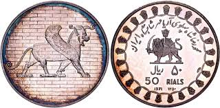 |
| PRINT Magazine | Setting Iran Aflame – PRINT Magazine | 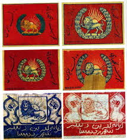 |
| YouTube | Artifactually Speaking - YouTube | 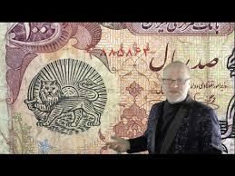 |
| Numista | 25 Rials - Mohammad Rezā Pahlavī (Artaxerxes Palace) - Iran – Numista | 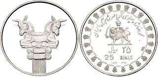 |
| Numista | 500 Rials - Mohammad Rezā Pahlavī (Winged Lion) - Irão – Numista | 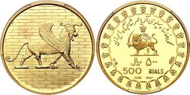 |
| Flickr | شناسنامه | Sam Kia | Flickr | 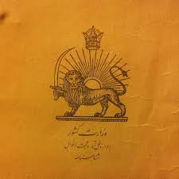 |
| Gaana | Ey Iran Song Download: Play & Listen Ey Iran Farsi MP3 Song by The Hermes @Gaana | 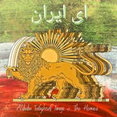 |
| Alamy | The Shenasname is a national identification document used in Iran, and the Pahlavi edition refers to a version issued during the Pahlavi dynasty. It holds historical significance in understanding Iranian bureaucracy during | 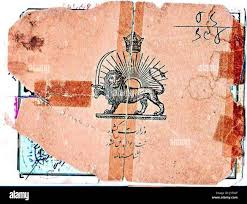 |
| Numista | 500 Rials (Provisional Issue; Type 3) - Iran – Numista | 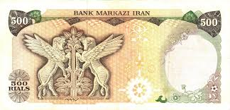 |
| تاریخچه مصوّر مرزن آباد (@history_of_marzanabad) • Instagram photos and videos | 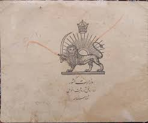 | |
| TikTok | عملات #متحف_البحيران | TikTok | 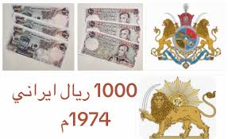 |
| Eskenas Iran🇮🇷🇺🇸 (@eskenas_iran) · Los Angeles, California · Instagram photos and videos | 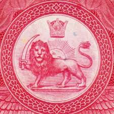 | |
| Art Town (parsaroozmand) - Profile | Pinterest | 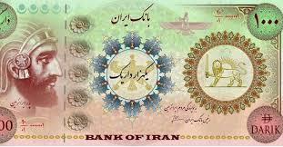 | |
| Müzayede APP | İRAN 1.000-5.000-10.000 RİALS ''İRAN LİDERLERİ SERİSİ'' HATIRA/FANTAZİ BANKNOT TAKIMI 1. EMİSYON 2025 ÇİL | Müzayede APP | 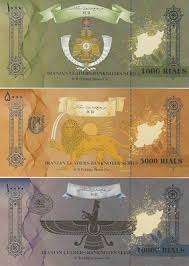 |
| Saurashtra Postage - Indian Lion | 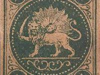 | |
| Pinno | شاری_زیرک on Pinno | 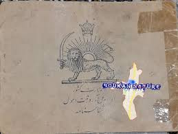 |
| eBay | Card Jewish RARE 1910? Iran Persia Birth Certificate Identity Judaica ? | eBay | 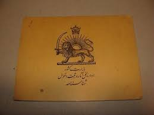 |
| Coin Talk | It's Raining Cats and Dogs - Check out my new Conder Token! | Coin Talk | 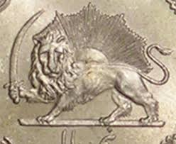 |
| X | afshinnariman" - Results on X | Live Posts & Updates | 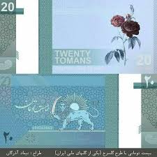 |
| kbcoins.in | Iran , 500 riyals 1974 -79 Vf+ currency note signature 16 - KB Coins & Currencies | 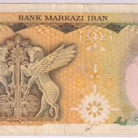 |
| Etsy | Persian Lion and Sun Antique - Etsy | 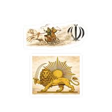 |
{kind=link}